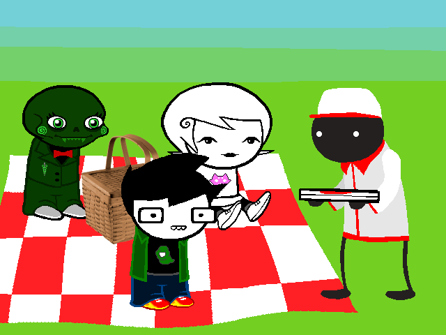

None Pizza With Left Beef
What is it???
None Pizza With Left Beef is a homestuck epilogue written by lavenderSiren.
Of course, it's much more than just a homestuck epilogue, as it also ties into our own post-game story over here. It's presented in a typical adventure format, much like homestuck proper.
Show me the video gamez
Okay okay, here's the games in this series so far.
Do note that the comic is only up to the wintermission so anything beyond chapter 1 hasn't been reached yet.Kale's Adventure (rpgmaker.net)
Do note that the comic is only up to the wintermission so anything beyond chapter 1 hasn't been reached yet.
- Chapter 1 (itch.io)
- Chapter 1 (rpgmaker.net)
- Project Spaghettivase (rpgmaker.net, demo)
- Birthday Dream (rpgmaker.net)
- Chapter 2 part 1 (rpgmaker.net)
- Up On The Housetop (locally hosted)
- Up On The Housetop (gamepage on relic castle, download mirror on Mega)
- Succession: Rise of the Fallen Heir (rpgmaker.net)